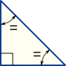

45 Degree Angle
How to construct a 45 Degree Angle
using just a compass and a straightedge
images/construct.js?mode=45degree
Steps:
- Construct a perpendicular line
- Place compass on intersection point
- Adjust compass width to reach start point
- Draw an arc that intersects perpendicular line
- Place ruler on start point and where arc intersects perpendicular line
- Draw 45 Degree Line

Why Does This Work?
We have secretly created an isosceles right triangle.
Because the interior angles of a triangle sum to 180° and one angle is 90°, the two equal remaining angles must each be: 180° − 90°2 = 45°.